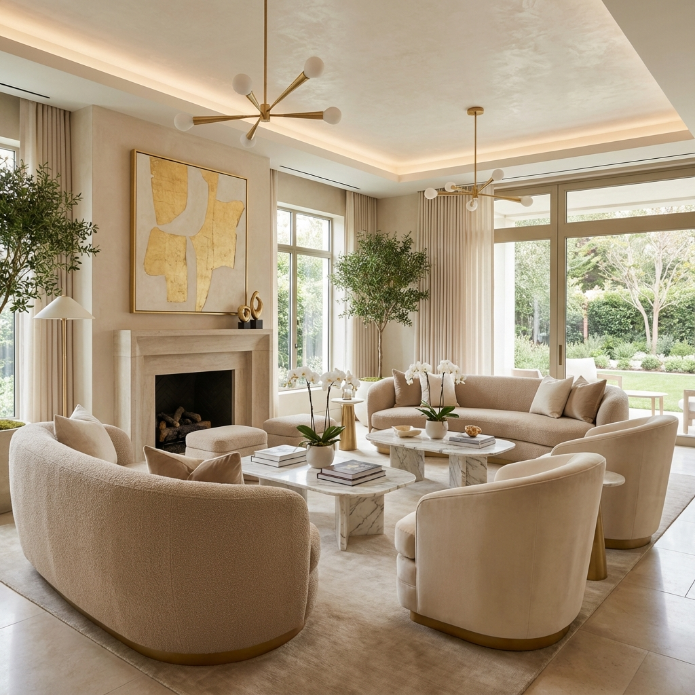
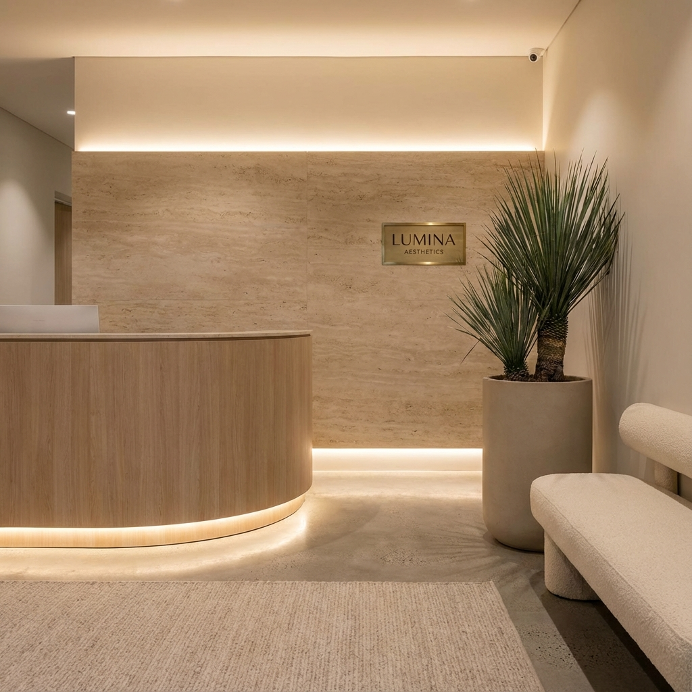

Medical Director
Dr. Ananya Sharma
A Gold Medalist from AIIMS, New Delhi, Dr. Sharma founded Verde with a simple belief: the best aesthetic results come from a place of calm, not chaos.
After her fellowship in South Korea, she realized that while technology is crucial, the approach matters just as much. She brings a "slow beauty" philosophy to clinical dermatology—taking the time to understand your lifestyle, stress levels, and skin history before prescribing a single treatment.
AIIMS Alumni
Gold Medalist
Global Training
Seoul, South Korea

A Sanctuary, Not a Clinic.
We replaced the clinical smell with essential oils, and the stark white lights with warm ambient glows.


